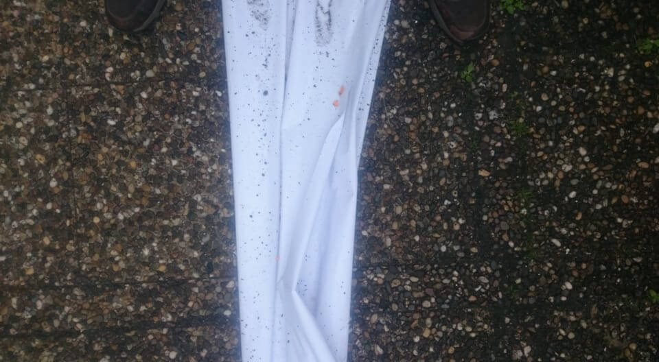
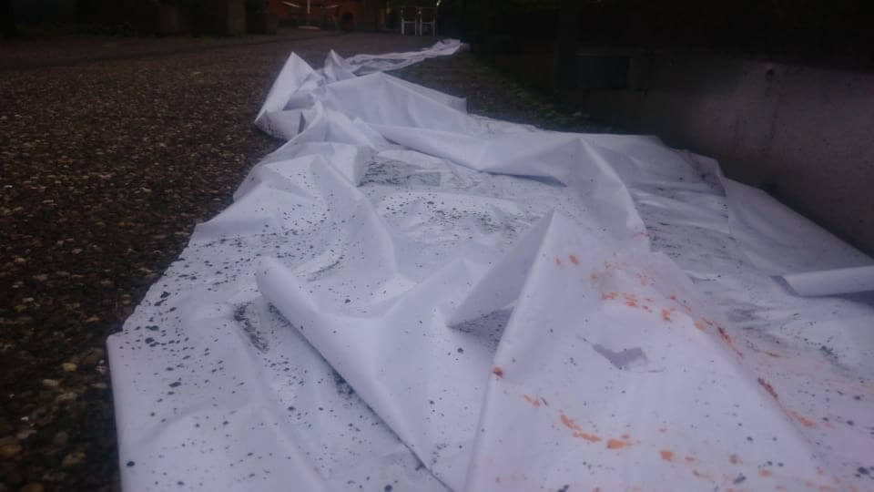
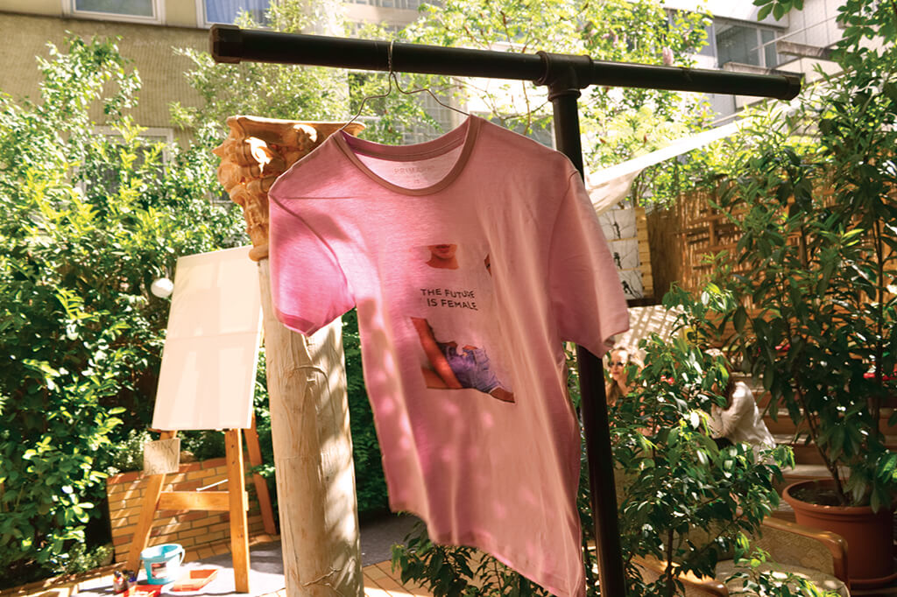

Fabian Widukind Penzkofer

23.06 - 22.07.2018
Kurze Szenen | Heile Welt
Neuer Kunstverein Regensburg
- Büro für verschiebbare Haltungen
- Gast: Fabian W. Penzkofer
11.05 - 13.05.2018
about:blank
LAF | Pforzheim
- Garance Arcandias
- Julian Bogenfeld
- Lennard Cleeman
- Friedrich Hensen
- Theo Dietz
- Janis Eckardt
- Moritz Finkbeiner
- Jan Hottmann
- Rebecca Ogle
- Caroline D'Orville
- Ivan Syrov
- Fabian W. Penzkofer
- Jasmin Schädler
- Tzusoo
- Helen Weber




14.04.2018
Innenhoftherapie
Forum 3 | Stuttgart
- Theo Dietz
- Theresa Dorn
- Wera Gmeiner
- Friedrich Hensen
- Jan Hottmann
- Miriam Krämer
- Christoph Kuttner
- Maria Leisner
- Maximilian Lutz
- Theresa Müller
- Ivan Syrov
- ROSANNAWIDUKIND


18.02 - 01.04.2017
placetobe
galerie hausgeburt | Stuttgart
- Friedrich Hensen
- Tobias Hensen
- Fabian W. Penzkofer
19.09 - 30.10.2015
schatten im licht
Cafe De Ville | Schorndorf
12.06 - 13.06.2015
Snag Festival
Villa Merkel | Esslingen
- Sebastian Schaal
- Marius Alsleben
- Fabian W. Penzkofer
07.03.2015
E41
E41 | Tübingen
- Helen Weber
- Alexandru Salariu
- Fabian W. Penzkofer